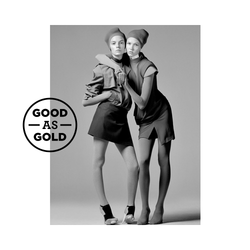

The aim of this document is to communicate the qualities that make up the brand Good As Gold and highlight their uses and applications.
The purpose of having a system like this is to ensure that G.A.G. is perceived as a cohesive entity with consitent and interesting tone and message.

This logo is to be used whenever possible. It should be transparent and a single colour. Don't skew it. It doesn't need to be massive, but shouldn't be too small either.
The logo and images

OK. Positioning the logo along an edge breaks up the structure of the layout.

OK. Only overlapping one edge. With greyscale images a colour can lift the logo off the image and tie together the composition.

NOT OK. Overlapping the logo with two edges makes it look too much like PILOT. Colour chosen doesn't contrast with the tones in the image enough.
The logo and text
The G.A.G. brand makes heavy use of two families; Gotham (HTF) and Archer and plays on the contrast between them.